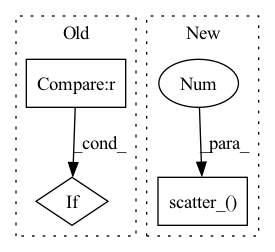

Pattern ID :417
Before Change
pred = outputs["outputs"]
target = move_to(batch["targets"], device)
if self.weight is not None :
self.weight = move_to(self.weight, device)
if self.ignore_index is not None:
target = torch.argmax(target, dim=1)After Change
targets = move_to(batch["targets"], device)
batch_size, num_classes = pred.shape[:2]
y_hot = move_to(torch.zeros(pred.shape), device).scatter_(1 , targets.unsqueeze(1) , 1.0)
y_smooth = (1 - self.alpha) * y_hot + self.alpha / num_classes
loss = torch.sum(- y_smooth * torch.nn.functional.log_softmax(pred, -1), -1).sum()
if self.reduction == "mean":In pattern: SUPERPATTERN
Frequency: 3
Non-data size: 3
Instances Fragment ID: 1554230
Project Name: kaylode/theseus
Commit Name: b842d768df45af67b9f7ac5349f0a65cf607ddad
Time: 2022-09-27
Author: pmkhoi@selab.hcmus.edu.vn
File Name: theseus/semantic/losses/ce_loss.py
M Class Name: CELoss
N Class Name: SemanticSmoothCELoss
M Method Name: forward(4)
N Method Name: forward(4)
M Parent Class: nn.Module
N Parent Class: nn.Module
M File Name: theseus/semantic/losses/ce_loss.py
N File Name: theseus/semantic/losses/ce_loss.py
M Start Line: 17
M End Line: 29
N Start Line: 42
N End Line: 53
Before Change
final_target_logit = torch.where(
target_logit > self.th, cos_theta_m, target_logit - self.mm
)
if cfg["USE_AMP"] == True and cfg["OPT_LEVEL"] == "O1" :
final_target_logit = final_target_logit.half()
cos_theta.scatter_(1, label.view(-1, 1).long(), final_target_logit)
output = cos_theta * self.s
return outputAfter Change
if is_half:
cos_theta_m = cos_theta_m.half()
index = torch.zeros_like(cos_theta)
index.scatter_( 1, label.data.view(-1, 1), 1 )
index = index.byte().bool()
output = cos_theta * 1.0
output[index] = cos_theta_m[index]
output *= self.s Fragment ID: 1554228
Project Name: cavalleria/cavaface
Commit Name: 98a21048f5dce435a6639a288dafc4c6be61be05
Time: 2021-08-25
Author: 605370459@qq.com
File Name: head/metrics.py
M Class Name: ArcFace
N Class Name: ArcFace
M Method Name: forward(3)
N Method Name: forward(3)
M Parent Class: nn.Module
N Parent Class: nn.Module
M File Name: head/metrics.py
N File Name: head/metrics.py
M Start Line: 81
M End Line: 103
N Start Line: 67
N End Line: 86
Before Change
return softmax
def forward(self, logits, samples, soft):
if samples is None :
return self.gumbel_softmax(logits, self._temperature, self._eps, hard=True)
else:
return -torch.sum(-samples * F.log_softmax(logits, -1), -1)
After Change
if hard:
// Straight through.
index = y_soft.max(dim, keepdim=True)[1]
y_hard = torch.zeros_like(logits, memory_format=torch.legacy_contiguous_format).scatter_( dim, index, 1.0 )
ret = y_hard - y_soft.detach() + y_soft
else:
// Reparametrization trick.
ret = y_soft Fragment ID: 1554224
Project Name: xiaosu-zhu/mcquic
Commit Name: e12be331e275549e5b8a7ef6a7c8dbf6d4e387bf
Time: 2021-04-08
Author: xiaosu.zhu@outlook.com
File Name: src/mcqc/layers/gumbelSoftmax.py
M Class Name: GumbelSoftmax
N Class Name: GumbelSoftmax
M Method Name: forward(5)
N Method Name: forward(4)
M Parent Class: nn.Module
N Parent Class: nn.Module
M File Name: src/mcqc/layers/gumbelSoftmax.py
N File Name: src/mcqc/layers/gumbelSoftmax.py
M Start Line: 40
M End Line: 44
N Start Line: 8
N End Line: 21